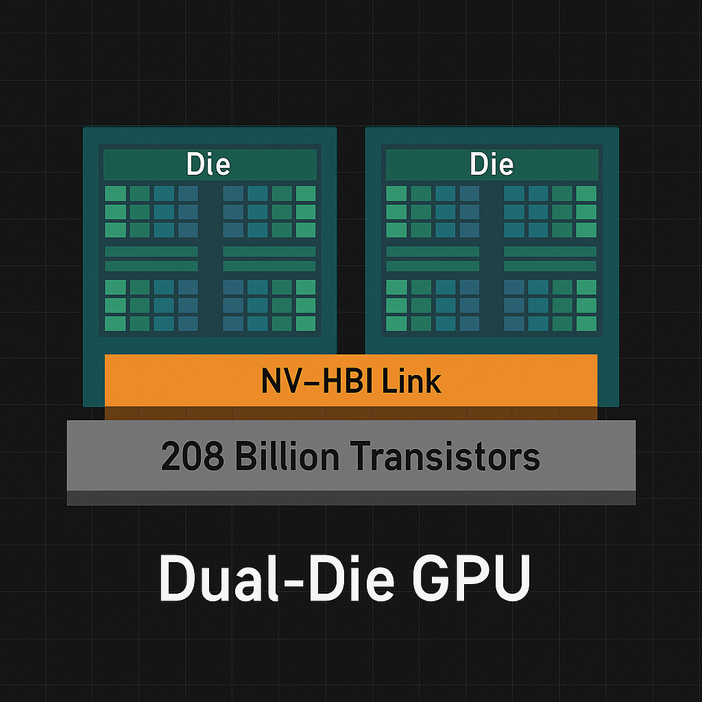
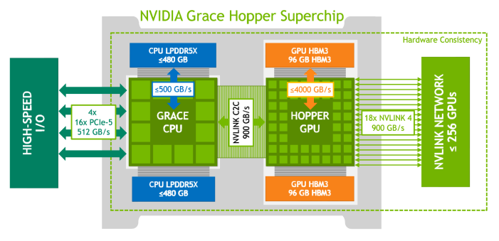
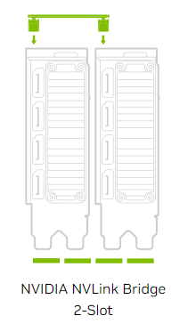
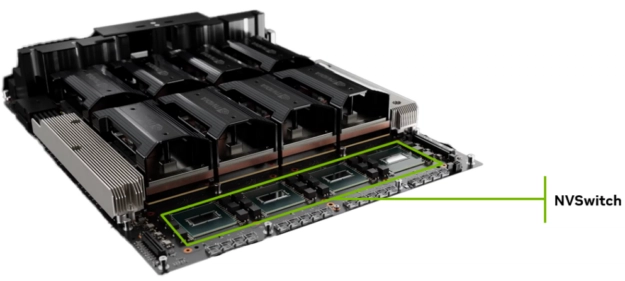
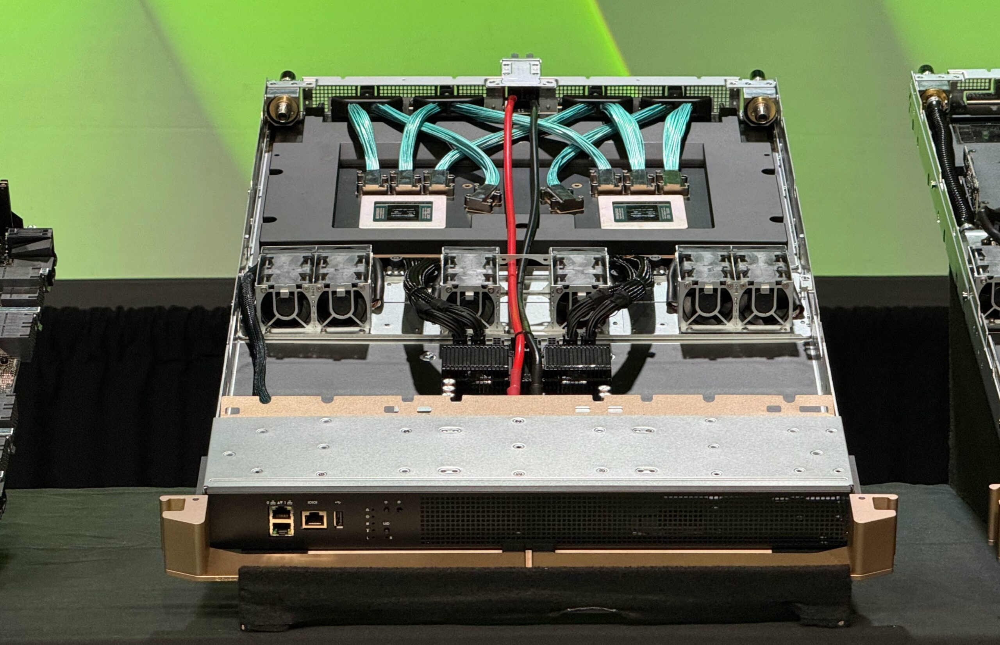
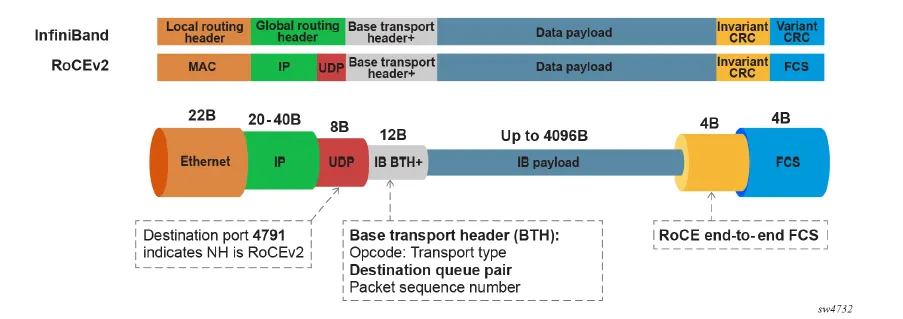
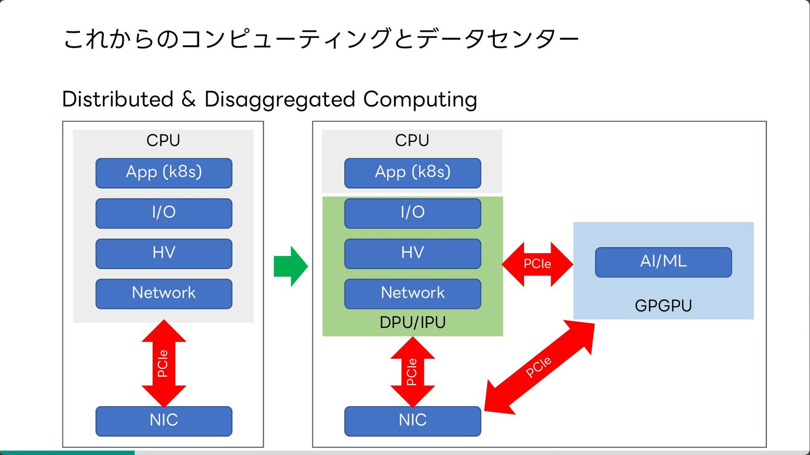
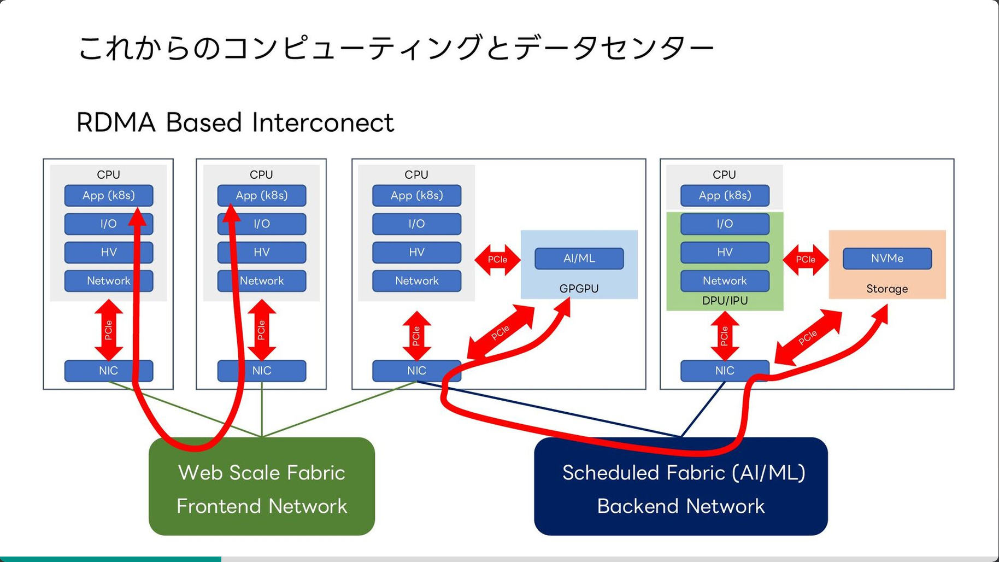

CloudNet@에서 진행하고 있는 AI Datacenter Network Study(이하, AIDN)에서 매주 생전 처음 접하는 단어들의 홍수에 허우적(?)하는 중입니다.
RTX3090의 같은 경우에는 개인용 GPU 중 NV Link 브리지를 지원하는 가장 상위 모델로 알고있지만,
가정용 메인보드의 PCIe 슬롯 간 속도가 다른건 차치하더라도, NV Link가 주는 효용을 다 쓸 수 있을지 애매해서 좀 고민을 하고 있었습니다.
이번 주차에서 들은 생각은 NVIDIA 생태계에서 매우 비용효율적인 소모품이라는 것을 알게 되었습니다.
대역폭에 있어서, 가까우면 가까울 수록 크다는 것은 일반적인 저장장치 (ROM -> RAM -> L1/L2 Cache) 계층 구조와 비슷한 느낌이었습니다.
flowchart TB
subgraph C["1. [브릿지] 카드 <-> 카드: 수백 GB/s"]
subgraph B["2. [패키지] CPU <-> GPU: 900GB/s"]
subgraph A["3. [패키지] 다이 <-> 다이: ~ 10TB/s"]
a["익숙한 개념"]
end
end
end
- NV-HBI Link

Image Referenced from Uvation
- GPU 패키지 내부에 2개의 다이 간의 통신을 위한 링크
- NVLink-C2C

Image Referenced from iThome
- Grace Hopper 칩에 적용된 CPU와 GPU 간의 통신을 위한 링크
- ARM 기반 CPU를 통해, PCIe를 거치지 않고 GPU와 CPU 간의 통신을 가능하게 함
- 기존의 PCIe가 병목이기 때문에, 칩 패키지 내에서 처리될 수 있도록 함
- NVLink 브리지

Image Referenced from MAXON
- 앞서 말했던, NVLink 입니다. 데이터센터 SXM(Server PCI Express Module)에는 필요없다고 하는데, SXM? 모르기 때문에 한번 찾아봤습니다.
위까지는 그래도 기존 지식 속에서 그렇-구나하고 슥슥 넘어갈 수 있는데, 이제부터는 신기(?)한 것들.
flowchart TB
subgraph C["1. [AI 팩토리] InfiniBand / RoCEv2 : 800GB/s"]
subgraph B["2. [단일 랙] NVSwitch 트레이 (NVL72): 130TB/s"]
subgraph A["3. [단일 서버] NVLink + NVSwitch: 1.8TB/s"]
a["새롭게 알게된 개념"]
end
end
end
… 여기서는 단어들만 조금씩 정리해보고 덮어보려고 합니다.
-
NVSwitch와 NVSwitch 트레이?
일단 아래 3줄은, GitHub Copilot이 써줬습니다.- NVSwitch는 NVIDIA에서 개발한 고속 스위칭 기술로, 여러 GPU 간의 데이터 전송을 효율적으로 관리합니다. - NVSwitch 트레이는 이러한 스위치를 여러 개 포함하여, 단일 서버 내에서 GPU 간의 통신을 극대화합니다. - 이를 통해 단일 서버 내에서 최대 1.8TB/s의 데이터 전송 속도를 달성할 수 있습니다.- NVSwitch 는 NVLink를 네트워크 패브릭으로 확장하기 위한 스위칭 칩이라고 합니다.

Image Referenced from AICPLIGHT
- NVSwitch의 내부에 대한 다른 도표는 ServerTheHome에도 다양하게 있었습니다.
- 아래 사진이 GB200 NVL72 스위치 트레이 내부라고 하네요.

Image Referenced from ServerTheHome
- NVSwitch 는 NVLink를 네트워크 패브릭으로 확장하기 위한 스위칭 칩이라고 합니다.
-
InfiniBand / RoCEv2 아래 3줄도, GitHub Copilot이 써줬습니다.
- InfiniBand는 고속 데이터 전송을 위한 네트워크 기술로, 주로 HPC(High-Performance Computing) 환경에서 사용됩니다. - RoCEv2(RDMA over Converged Ethernet version 2)는 InfiniBand의 기능을 이더넷 네트워크에서 구현한 기술로, 낮은 지연 시간과 높은 대역폭을 제공합니다. - 이를 통해 AI 팩토리 환경에서 GPU 간의 데이터 전송 속도를 800GB/s까지 달성할 수 있습니다.- 인피니밴드는 스토리지 분야에서 쓰인다고 먼저 들었었는데, GPU 서버 간 통신에도 쓰이는구나를 알게되었습니다.
- 인피니밴드는 자체 계층을 갖는데 반해, RoCEv2는 Ethernet/IP/UDP 위에 (주로 ETH를 대상으로) InfiniBand transport를 올린다고 합니다.
- 인피니밴드 전송 계층
LRH │ GRH optional │ BTH │ Extended Transport │ Payload │ CRCs - RoCEv2 전송 계층
Ethernet │ IP │ UDP │ **BTH** │ Extended Transport │ Payload │ ICRC - 그림을 더 찾아보니 아래와 같은 것을 발견.

Image Referenced from Menuka Wijayarathna
- 2020년에 NVIDIA가 멜라녹스를 인수한 이유가 인피니밴드라는 것을 검색하다보니 발견.
- 그 외에도
RDMA로 CPU를 거치지 않는다라는 것이 납득이 안되었는데, クラウドデータセンターネットワークの “いま”と “これから”에 좋은 그림이 있어서 첨부.


References
- UVATION - Blackwell Architecture and the Future of AI Inferencing
- iThome - 用256顆自研異質融合晶片，輝達推144TB共享記憶體的AI系統
- MAXON - Managing VRAM issues with Redshift
- Wikipedia - SXM (소켓)
- 기글하드웨어 - SXM-to-PCIe 어댑터. 데이터센터용 GPU를 PCIe 슬롯에 연결
- DEV Community - NVLink vs. NVSwitch: The Backbone of Scalable AI GPU Interconnect
- ServeTheHome - NVIDIA NVSwitch Details at Hot Chips 30
- ServeTheHome - This is the NVIDIA DGX GB200 NVL72
- Medium - From InfiniBand to Ultra Ethernet: Why AI Networks Had to Rethink RDMA on Ethernet
- Speaker Deck - Masayuki Kobayashi

kkumtree
Source code on GitHub
© 2025 kkumtree and contributors All rights reserved.
Licensed under
CC BY-NC-ND 4.0